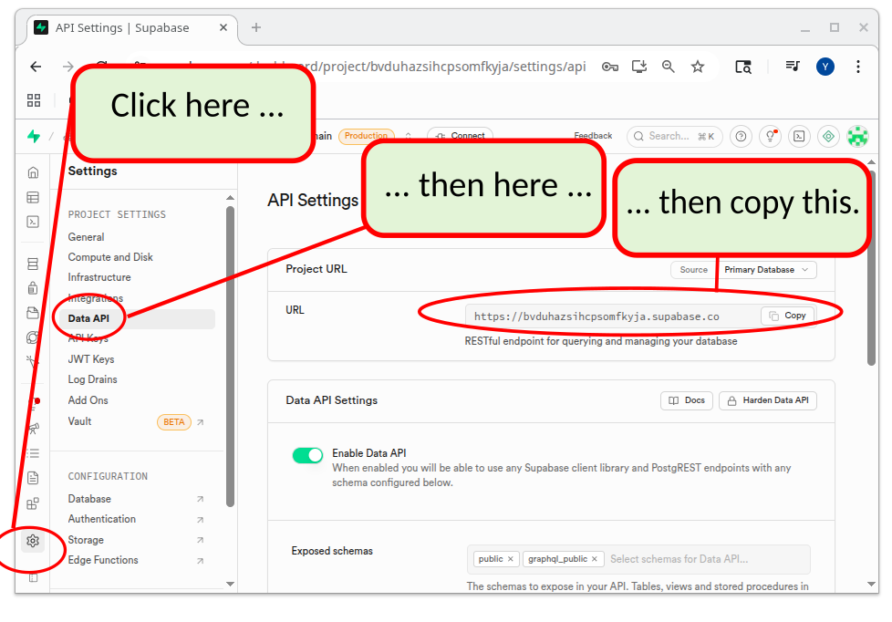

72 72. Step 5: Setup Supabase
Supabase is an online service that gives you the tools you need to store and manage data for your app. It includes:
- a database (where structured data is stored)
- authentication features (to allow users to sign-in to your app)
- file storage (like a hard drive in the cloud)
- “edge functions,” which are small pieces of code that run on servers close to your users.
72.1 Remote vs. Local Supabase
Supabase can run remotely (hosted online by Supabase) and/or locally (running on your own computer). For beginners, remote Supabase is far easier. Everything happens in your browser, and nothing must be installed or configured. Local Supabase is mainly for advanced users and developers who want to test everything on their own computer before uploading to the Internet. Having a local copy of supabase also allows you to develop your app during times that you don’t have access to the Internet.
In this tutorial we will use remote Supabase only, so you do not need to install a local copy or manage anything technical on your machine.
72.2 Sign Up for Supabase
- Go to the Supabase website
- Sign up for a free account
- Create a new project
72.3 Project Configuration
When creating your project, you’ll need to:
- Choose a project name
- Set a database password (save this securely)
- Select a region (choose the closest to your users)
Important: Save your database password - you’ll need it later.
72.4 Get Your API Keys
Once your project is created:
- Edit the .env.local file. It currently looks like this:
# You will need a .env.local file for local dev server (localhost)
# You will need a .env.test.local file for running the integration tests.
# Create the those files, and add the following variables.
# The local files are ignored by default.
# In .env.local and .env.test.local:
NEXT_PUBLIC_SUPABASE_URL="https://XXXX.supabase.co"
NEXT_PUBLIC_SUPABASE_ANON_KEY="XXXX"
# In addition to that, you also need .env.test.local with these variables:
SUPABASE_SERVICE_KEY="XXXX"
STRIPE_SECRET_KEY="sk_test_XXX"
STRIPE_PRICE_ID="price_XXX"
STRIPE_WEBHOOK_SECRET="whsec_XXX"```Delete the bottom few lines and top few lines so that the file now looks like this:
# In .env.local and .env.test.local: NEXT_PUBLIC_SUPABASE_URL="https://XXXX.supabase.co" NEXT_PUBLIC_SUPABASE_ANON_KEY="XXXX"Go to Project Settings (Gear button at bottom left of screen) → Data API

Copy the URL.
Modify the following line in the .env.local file to reflect the URL that you copied.NEXT_PUBLIC_SUPABASE_URL="https://XXXX.supabase.co"Click on the
API Keyssection.
Copy theanon publickey.Modify the following line in the .env.local file to reflect the URL that you copied.
NEXT_PUBLIC_SUPABASE_ANON_KEY="XXXX"


Practice Questions
Easy
Question 1 · Multiple choice
Which of the following is not one of the Supabase features listed on this page?
- A database for storing structured data
- Authentication, so users can sign in to your app
- File storage in the cloud
- Processing credit card payments
Question 2 · Short answer
What are Supabase edge functions?
Question 3 · True or false
In this tutorial, you install and run your own copy of the Supabase server on your computer.
Question 4 · Short answer
When you create a new Supabase project, which three things does this page say you need to choose or set?
Medium
Question 5 · Multiple choice
Most of your app’s users will be in New York. Which region should you pick for your Supabase project?
- The region closest to you, the developer
- The region closest to your users, such as an East US region
- Any region; the choice makes no difference
- Whichever region is listed first in the menu
Question 6 · Short answer
Give two reasons why a developer might run Supabase locally (on their own computer) instead of using only the remote version.
Question 7 · Fill in the blank
Your Supabase project URL is https://qzvbnmtrewplkjhgfdsa.supabase.co. Write the complete line in .env.local that stores it.
Question 8 · Short answer
The original file also contains SUPABASE_SERVICE_KEY, STRIPE_SECRET_KEY, STRIPE_PRICE_ID and STRIPE_WEBHOOK_SECRET. According to the comments in the file, why can you delete those lines from .env.local?
Question 9 · True or false
Even though your project is a Git repository, it is OK to type your real Supabase values into .env.local.
Hard
Question 10 · Scenario
Sam starts the app, but nothing that needs Supabase works. His .env.local contains:
NEXT_PUBLIC_SUPABASE_URL="https://XXXX.supabase.co"
NEXT_PUBLIC_SUPABASE_ANON_KEY="XXXX"What went wrong, and how does he fix it?
Question 11 · Short answer
The page tells you to save your database password securely. Why is this password so important? Give two reasons.
Question 12 · True or false
Two classmates clone the same task-app repository from GitHub. Because the Supabase project URL is stored in the repository, both copies of the app automatically use the same Supabase project.